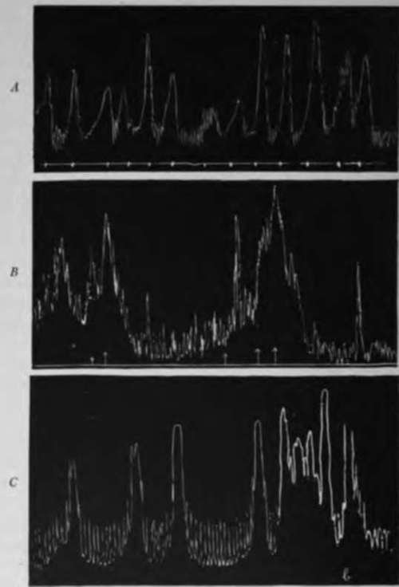

IV. Experimental Investigation Of The Hunger Mechanism In Disease Of Man
Description
This section is from the book "The Control Of Hunger In Health And Disease", by Anton Julius Carlson. Also available from Amazon: The Control of Hunger in Health and Disease.
IV. Experimental Investigation Of The Hunger Mechanism In Disease Of Man
1. Absence Of Gastric Hunger Contractions In Gastritis, Tonsillitis Influenza, And "Colds"
During the four years that Mr. V., th' gastric-fistula case, has been under observation in our laboratory he has had a few attacks of mild gastritis, in three cases associated with nose and throat colds, with some temperature. During these attacks the empty stomach remained somewhat atonic with complete absence of the hunger contractions. Mr. V. felt no hunger and had little or no desire to eat. In fact, putting food in the stomach in these conditions sometimes produced nausea. The absence of hunger and depression of the appetite thus ran parallel with the impairment of the gastric hunger mechanism.
Luckhardt and Hamburger have reported gastric atony and absence of hunger contractions in a case of acute gastritis brought on by dietary indiscretion. The author has taken records on himself in one mild attack of gastritis, lasting three days, two attacks of " cold" and tonsillitis, one of which was complicated with painful antrum infection. During the gastritis the empty stomach showed no hunger contraction. The tonsillitis, " colds," and antrum infection did not completely abolish the hunger contractions, except when sufficiently severe to induce elevation of the body temperature to 1010 or 1020 F. Again, the depression or absence of the feeling of hunger ran parallel with the degree of depression of the gastric hunger contractions. But even when no hunger was experienced, the sight of palatable food was capable of inducing some appetite.
2. Hunger In Diabetes Mellitus
Dr. Luckhardt studied the gastric hunger contractions of a man twenty-nine years of age, in the last stage of diabetes. The empty stomach showed abnormally strong hunger contractions till within a few days of death in coma, the patient at the same time complaining of great hunger. This seems to show that in clinical diabetes there is an increased activity of the gastric hunger mechanism similar to that demonstrated in pancreatic diabetes in dogs. But more observations are needed on clinical diabetes before this relation can be accepted or demonstrated.
3. Gastric Hunger Contractions In A Case Of Gastric Cancer
The subject was an old man, considerably emaciated, but with no serious obstruction at the pylorus. His hunger and appetite were good and his gastric hunger contractions normal. This observation of Luckhardt and Hamburger is in line with the fact that patients with cancer of the stomach may continue to feel hunger when the tumor growth is so advanced that feeding by mouth becomes impossible.
Fig. 34.-A, normal hunger contractions of the empty stomach of a neuras man. The contractions gave rise to epigastric pain, not hunger pangs, fi, t contractions of the empty stomach of 11 man with carcinoma of the stomach and tint pyloric obstruction. The contractions caused epigastric distress, rather true hunger. C, vigorous hunger contractions of the empty stomach of a man, 5 days before death in diabetic coma, showing vigorous hunger con associated with the diabetic |x>lyphagiu (Luckhardt and Hamburger).
4. Excessive Pain Produced By Normal Gastric Hunger Contractions In Neurasthenics
Dr. Luckhardt reports a case of a man who sought hospital treatment for a dull ache or epigastric pain which came on whenever the stomach was empty. This pain or ache proved to be due to the hunger contractions of the empty stomach, the latter not being stronger than those observed in normal individuals. The patient believed that the observation of his stomach by the balloon method was a method of treatment. The patient stated after a few days that the pain had ceased entirely, although the gastric hunger contractions continued normal, and he left the hospital very grateful for what had been done for him. There was no evidence of organic lesion in the stomach. This case presents either a temporary neurosis (hyperexcitability) of the gastric hunger nerves so that the normal contractions actually give rise to abnormally strong impulses, or else the normal impulses from the stomach become exaggerated in consciousness through perverted attention.
The author studied the gastric hunger contractions of a similar case, a young farmer seeking medical aid for excessive epigastric pain, and some feeling of weakness and depression. No organic lesions could be detected. The gastric hunger contractions were strong, the periods ending in incomplete tetanus, but equally strong hunger tonus and contractions have been seen in normal individuals of his age and occupation. Yet the tonus and contractions were to him sufficiently painful to seek medical aid repeatedly, but no treatment appeared to give permanent relief.
5. Cause Of The "Hunger Pains" In Cases Of Gastric And Duodenal Ulcers
Hamburger, Ginsburg, and Tumpowsky found that the "gnawing" hunger pains in duodenal and gastric ulcers are caused by the hunger contractions of the empty or partly empty stomach. These contractions are, on the whole, not stronger than those of healthy persons in hunger, yet they are felt as much more painful than the normal hunger pangs. This may be due to hyperexcita-bility of the sensory nerve-fibers in the stomach. These patients usually feel a more or less steady and dull gastric pain besides the gnawing or intermittent pains associated with the rhythmical contractions. The cause of the continuous but less sharp pain is probably to be sought in the steady and strong tonus contractions of some region of the stomach or duodenum. This steady but dull gastric pain in ulcer patients is thus similar in origin to that felt by some people in prolonged starvation.
Continue to:
- prev: 6. Increase In Gastric Tonus And Hunger Contractions In Dogs After Partial Occlusion Of The Pylorus
- Table of Contents
- next: IV. Experimental Investigation Of The Hunger Mechanism In Disease Of Man. Continued